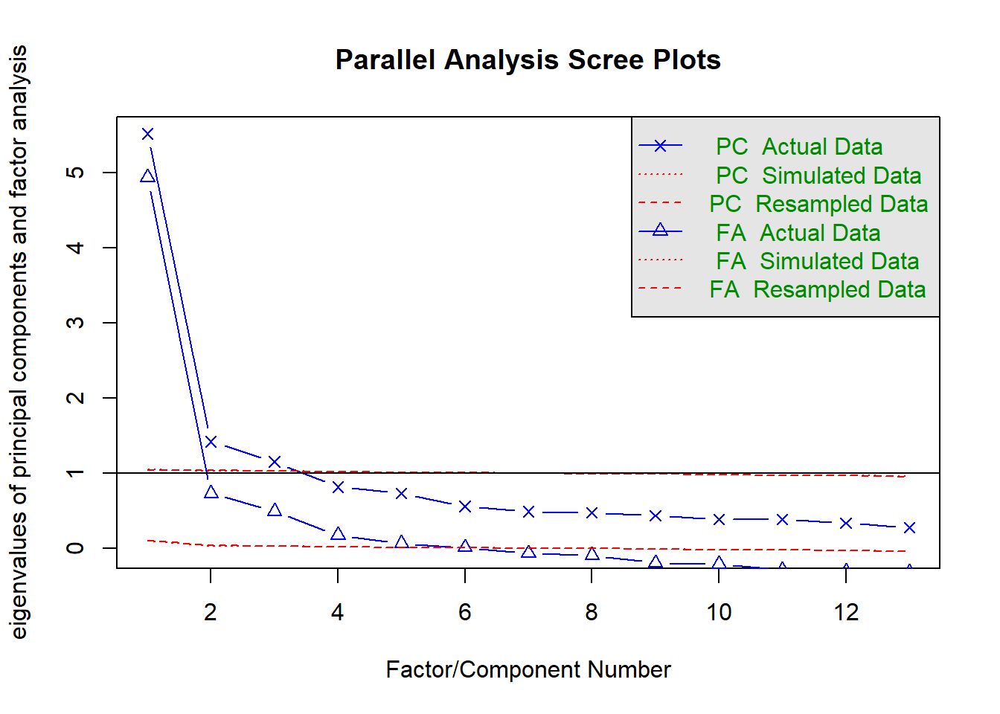

Chapter 11 Week 2 - Class
In the unlikely event that you were able to replicate the results of Kestilä in the take-home exercise, rerun your analysis script. If you did not manage to replicate the results, load the dataset ESSround1-b.csv into RStudio.
11.0.1 Loading the data
If you don’t know how to load the data, click below.
Click for explanation
df <- read.csv("ESSround1-b.csv", stringsAsFactors = FALSE)11.0.2 Question 1
Kestilä states that running a Principal Components Analysis is a good way to test whether the survey questions in the ESS measure attitudes towards immigration and trust in politics. Based on your reading of Preacher and MacCallum (2003), do you agree with this position?
11.0.3 Question 2
If you would have to choose a method for constructing the ‘trust in politics’ and ‘attitude towards immigration’ scales based on the theory and background information in the Kestilä article, what type of factor analysis would you choose? What key factors influence your decision?
Click for information
Key factors include:
- Theory-driven or exploratory?
- Estimation method
- Rotation method
- Method to establish how many factors are needed
11.0.4 Question 3
Run two factor analyses, one for each PCA of the original article. Inspect the number of factors necessary, evaluate the rotation method, and if necessary, run the factor analysis again with adapted settings (rotation method and/or different number of factors). How many factors are there?
Hint: Examing the help file for ?psych::fa
Click for explanation
To perform an exploratory factor analysis, you can use the function fa of the package psych. You will have to specify the data, and the variables that you want to include in the factor analyses. Furthermore, you will have to specify the number of factors that you want to extract, the rotation method and the estimation method.
library(psych)
library(GPArotation)
efa_trust <- fa(df[, 7:19], nfactors = 3, rotate = "promax", fm = "ml", scores = "Bartlett")In order to determine the number of factors to extract, you might want to look at the eigenvalues of the factors, which can be accessed by using the following code:
round(efa_trust$values, digits = 3)## [1] 5.054 0.874 0.687 0.304 0.185 0.076 0.014 0.008 -0.060 -0.078
## [11] -0.123 -0.149 -0.191Another common approach is to make a scree plot. All that is required for this, is to pass the eigenvalues to the qplot() function and add a geom_path:
library(ggplot2)
qplot(y = efa_trust$values) + geom_path()
You can do the same for the attitude variables:
efa_att <- fa(df[, 20:44], nfactors = 5, rotate = "promax", fm = "ml", scores = "Bartlett")
round(efa_att$values, digits = 3)## [1] 8.016 1.702 1.051 0.697 0.500 0.389 0.218 0.162 0.091 0.046
## [11] 0.043 0.028 0.022 0.008 -0.018 -0.028 -0.032 -0.056 -0.066 -0.083
## [21] -0.089 -0.119 -0.132 -0.146 -0.266qplot(y = efa_att$values) + geom_path()
As recommended in the lecture, a better and more quantified way to establish the number of factors is “parallel analysis” (Horn, 1965). Here’s how to do it in R:
fa.parallel(df[, 7:19])
## Parallel analysis suggests that the number of factors = 6 and the number of components = 3Note that, in this case, parallel analysis recommends as many as 6 factors. However, in order to be able to compare our results with those from Kestilä, we might consider aligning ourselves with the literature and choosing the same number of factors for our analyses as components in the article.
11.0.5 Question 4
Apart from the number of factors, you also want to look at the factor loadings. They can be found in the “pattern matrix.” The higher the factor loadings are, the more indicative an item is for the latent factor. If you find some items to have only very low loadings (indicating that the items do not provide much information about the factor), you may choose not to include them in your analysis. This means you have to rerun the analysis under question 3.
Click for explanation
You can find the factor loadings by means of the ‘print’-function used in the take-home exercise, or you can search for the variable ‘loadings,’ which is inside the results object, to end up with just the information you are searching for.
efa_trust$loadings##
## Loadings:
## ML1 ML2 ML3
## pltcare 0.784 -0.126
## pltinvt 0.783 -0.131
## trstprl 0.528 0.101 0.258
## trstlgl 0.827
## trstplc -0.157 0.800
## trstplt 0.713 0.116
## trstep 0.432 0.303
## trstun 0.343 0.366
## stfeco 0.128 0.725 -0.129
## stfgov 0.270 0.640 -0.132
## stfdem 0.201 0.479 0.129
## stfedu -0.166 0.665 0.104
## stfhlth -0.137 0.632
##
## ML1 ML2 ML3
## SS loadings 2.518 2.035 1.725
## Proportion Var 0.194 0.157 0.133
## Cumulative Var 0.194 0.350 0.483efa_att$loadings##
## Loadings:
## ML3 ML1 ML5 ML4 ML2
## imsmetn 0.479 0.403
## imdfetn 0.321 0.563
## eimrcnt 1.110 -0.187
## eimpcnt 0.345 0.665
## imrcntr 0.798
## impcntr 0.259 0.727
## qfimchr 0.126 0.867
## qfimwht 0.114 0.749
## imwgdwn 0.511 0.182
## imhecop 0.560 0.153
## imtcjob 0.712 0.138
## imbleco 0.702 0.162
## imbgeco 0.740
## imueclt 0.470 -0.166 -0.166
## imwbcnt 0.639 -0.169
## imwbcrm 0.515 -0.177 0.101
## imrsprc 0.534 0.159
## pplstrd 0.245 -0.365
## vrtrlg -0.115 0.186 0.270
## shrrfg 0.302 -0.280
## rfgawrk 0.474
## gvrfgap 0.752
## rfgfrpc 0.219 -0.255
## rfggvfn 0.489
## rfgbfml 0.632
##
## ML3 ML1 ML5 ML4 ML2
## SS loadings 3.271 2.397 2.061 1.648 1.549
## Proportion Var 0.131 0.096 0.082 0.066 0.062
## Cumulative Var 0.131 0.227 0.309 0.375 0.437The matrix of loadings indicates how strongly each factor (columns) is associated with the items (rows).
Below the matrix of loadings, we see a second matrix, which indicates (amongst other things) the
proportion var: How much variance in the items is explained by each of the factors.
Each subsequent factor explains slightly less variance than the ones before it (this is a property of exploratory factor analysis).
The cumulative var indicates how much variance the factors explain, in total. If you estimated as many factors as items, then the last value for cumulative var would be 1.00 (100%).
The factor loading matrix is slightly hard to read, due to the jumble of factor loadings. To create more clarity, it is convenient to suppress the factor loadings that are lower than .30.
print(efa_trust$loadings, cut = .30, digits = 2)##
## Loadings:
## ML1 ML2 ML3
## pltcare 0.78
## pltinvt 0.78
## trstprl 0.53
## trstlgl 0.83
## trstplc 0.80
## trstplt 0.71
## trstep 0.43 0.30
## trstun 0.34 0.37
## stfeco 0.73
## stfgov 0.64
## stfdem 0.48
## stfedu 0.67
## stfhlth 0.63
##
## ML1 ML2 ML3
## SS loadings 2.52 2.03 1.72
## Proportion Var 0.19 0.16 0.13
## Cumulative Var 0.19 0.35 0.48Furthermore, if you want to perform a factor analysis without, say, stfedu, while you want all other variables included in your factor analysis, you can simply leave the column number of stfedu, which is 13, out of the command:
efa_trust_without_stfedu <- fa(df[, c(7:12, 14:19)], nfactors = 3, rotate = "promax", fm = "ml")11.0.6 Question 5
Give the factor scores an appropriate name. You can do this by inspecting the items that load on one factor. What do these items have in common substantively? The goal of a factor analysis usually is to create interpretable factors. If you have trouble interpreting the factors, you can choose to tweak the analysis by changing the options, or including/excluding more items.
Furthermore, after you named the factor scores accordingly, extract them from the results object and add them to the data.frame.
Hint: If you do not know how to do this, have a look at question 1.h from the take-home exercise of week 2.
Please note that the colnames will be specified from left to right, and not, for example, from ML1 to ML5.
11.0.7 Question 6
The next step is to assert whether the items that together form one factor, also form a reliable scale. Run separate reliability analyses by means of the function alpha for the items that together form one factor, and evaluate Cronbach’s alpha to see whether the scales are internally consistent. The “Reliability if an item is dropped (alpha.drop)” information may be handy to inspect what would happen if you would delete one item; you can find it inside the reliability analysis object. If Cronbach’s alpha is not ok, deselect one survey item and run the analyses under question 4 and question 5 again.
Hint: Cronbach’s alpha > .7 are deemed to be ok, > .8 is good.
If Cronbach’s alpha is not ok, deselect one survey item and run the analyses under question 4 and question 5 again.
Click for explanation
If you want to assess the reliability of the variables pltcare, pltinvt, trstprl, trstplt, and trstep you can run a reliability analysis as follows.
Hint: name the new objects substantively, instead of numbering them.
library(psych)
reli_1 <- psych::alpha(df_with_scores[, c(7, 8, 9, 12, 13)])
reli_1##
## Reliability analysis
## Call: psych::alpha(x = df_with_scores[, c(7, 8, 9, 12, 13)])
##
## raw_alpha std.alpha G6(smc) average_r S/N ase mean sd median_r
## 0.8 0.83 0.82 0.49 4.8 0.0019 4.4 1.4 0.52
##
## lower alpha upper 95% confidence boundaries
## 0.8 0.8 0.81
##
## Reliability if an item is dropped:
## raw_alpha std.alpha G6(smc) average_r S/N alpha se var.r med.r
## pltcare 0.79 0.80 0.77 0.50 4.0 0.0021 0.017 0.52
## pltinvt 0.80 0.81 0.78 0.51 4.2 0.0021 0.016 0.53
## trstprl 0.73 0.78 0.76 0.47 3.6 0.0027 0.018 0.52
## trstplt 0.70 0.75 0.73 0.43 3.1 0.0031 0.014 0.43
## trstep 0.78 0.82 0.80 0.53 4.6 0.0021 0.010 0.52
##
## Item statistics
## n raw.r std.r r.cor r.drop mean sd
## pltcare 17975 0.66 0.75 0.67 0.56 2.6 1.1
## pltinvt 17971 0.64 0.74 0.65 0.54 2.4 1.1
## trstprl 17753 0.84 0.80 0.74 0.69 6.3 2.3
## trstplt 17966 0.88 0.86 0.83 0.77 5.3 2.2
## trstep 16390 0.77 0.70 0.59 0.57 5.6 2.3Sometimes, the table “Reliability if an item is dropped” will indicate that Cronbach’s alpha increases when you drop a variable out of the analysis. Note, however, that doing so is an exploratory approach to analysis, and it may make your work incomparable to other publications using the same scale.
11.0.8 Question 7
Now you can analyze the differences between the factor scores for the PCA analysis (take-home exercise 2) and the EFA by plotting them in a series of scatterplots (bivariate) using ggplot2. The PCA factor scores are already stored in the dataset ESSround1-b.csv in columns 45 through 52 (df[, 45:52]).
Plot the scores for one of your new factors on the x axis, and try to match it with a corresponding PCA component in the dataset. Note that if you went with a different number of factors than Kestilä’s components (5 for ‘trust in politics’ and 3 for ‘attitudes towards immigration’), you may find little correlation between any factors.
Click for explanation
Make sure to adjust the arguments x = EFA_trust1 and y = PCA_Trust1 to align with your own EFA factor column name and a PCA component column name from the data respectively
library(ggplot2)
ggplot(data = df_with_scores) +
geom_point(mapping = aes(x = EFA_Trust1, y = PCA_Trust1))
11.0.9 Question 8
Examine the correlations between the PCA and EFA scales for the ‘trust in politics’ scores, and for the ‘immigration’ scores. What is your conclusion: is there a difference between them?
Click for explanation
Hint: Name the new objects substantively once again.
Example for trust in politics:
library(psych)
corr.test(df_with_scores$EFA_Trust1, df_with_scores$PCA_Trust1, use = "complete.obs")## Call:corr.test(x = df_with_scores$trustinstEFA, y = df_with_scores$trustinst,
## use = "complete.obs")
## Correlation matrix
## [1] 0.94
## Sample Size
## [1] 14778
## These are the unadjusted probability values.
## The probability values adjusted for multiple tests are in the p.adj object.
## [1] 0
##
## To see confidence intervals of the correlations, print with the short=FALSE option11.0.10 Question 9
Kestila uses the PCA factor scores to evaluate country level differences in 1. Attitudes towards immigration and 2. Political trust. Repeat her analyses using the factor scores you saved in step 5. Think about the statistical test you would like to use. Do you draw similar or different conclusions?
Click for explanation
We can use an ANOVA to test whether the countries differ in the amount of political trust the participants have.
fit_ANOVA <- aov(trustinstEFA ~ cntry, data = df_with_scores)
summary(fit_ANOVA)## Df Sum Sq Mean Sq F value Pr(>F)
## cntry 8 1740 217.55 199.6 <2e-16 ***
## Residuals 14769 16100 1.09
## ---
## Signif. codes: 0 '***' 0.001 '**' 0.01 '*' 0.05 '.' 0.1 ' ' 1
## 3409 observations deleted due to missingnessIn which trustinstEFA is the dependent variable, cntry is the grouping variable, and df is the name of the dataset; summary will provide the results. However, it will only indicate whether the variable cntry is significant or not, so you will be unable to tell which countries differ in terms of their political trust. To tell which countries differ, you can do a pairwise comparison test, with a Bonferroni adjustment for multiple testing.
pair_comparison <- pairwise.t.test(df_with_scores$trustinstEFA, df_with_scores$cntry, p.adjust.method = "bonf", na.rm = TRUE)
round(pair_comparison$p.value, digits = 3)## Austria Belgium Denmark Finland Germany Italy Netherlands Norway
## Belgium 0.000 NA NA NA NA NA NA NA
## Denmark 0.000 0 NA NA NA NA NA NA
## Finland 0.000 0 0.085 NA NA NA NA NA
## Germany 0.033 0 0.000 0 NA NA NA NA
## Italy 1.000 0 0.000 0 1 NA NA NA
## Netherlands 0.000 0 0.000 0 0 0.000 NA NA
## Norway 0.000 0 0.000 0 0 0.000 0 NA
## Sweden 0.231 0 0.000 0 0 0.144 0 0.00511.0.11 Question 10
The second goal of Kestilä is to show how socio-demographic characteristics affect attitudes towards immigrants and trust in politics in Finland. Select only the Finnish cases using the variable cntry.
Click for explanation
To select the Finnish cases only, select rows for which $cntry is equal to (==) Finland:
df_finland <- df_with_scores[df_with_scores$cntry == "Finland", ]After selecting the Finnish cases, we have to prepare our variables for analysis.
Thanks to the factor analyses above, our dependent variables are taken care of.
However, we should examine the independent variables to make sure there are no surprises,
and do any recoding necessary before we can run multiple regression. The independent variables are
c("gndr", "yrbrn", "eduyrs", "polintr", "lrscale").
Click for explanation
library(tidySEM)
descriptives(df_finland[, c("gndr", "yrbrn", "eduyrs", "polintr", "lrscale")])Note that we still have to do some recoding. For example, the data contains participants’ year of birth instead of their age. We have to recode this variable. The data were collected in 2002, so we can simply subtract the year of birth of every participant from the year 2002.
df_finland$age <- (2002 - df_finland$yrbrn)Furthermore, the variables polintr and lrscale are currently coded as character variables. If you analyze them like that, R will make dummies for all distinct values on these variables. Let’s recode those, too! The main challenge is to get the levels of these variables in the correct order, and convert them to numbers. We demonstrate two ways to do this, one way for each of the two variables.
For political interest, we convert the character variable to an ordered categorical variable, and we specify the correct order of labels. Then, we convert it to a numeric variable.
table(df_finland$polintr)##
## Hardly interested Not at all interested Quite interested
## 842 228 785
## Very interested
## 144df_finland$polintr <- ordered(df_finland$polintr, levels = c("Not at all interested", "Hardly interested", "Quite interested", "Very interested"))
table(df_finland$polintr)##
## Not at all interested Hardly interested Quite interested
## 228 842 785
## Very interested
## 144df_finland$polintr <- as.numeric(df_finland$polintr)For political orientation, only the two extreme values of the scale are labeled as text. Thus, we can replace these labels with numbers, and then convert the entire variable to numeric.
table(df_finland$lrscale)##
## 1 2 3 4 5 6 7 8 9 Left Right
## 25 62 148 183 599 199 296 217 79 24 59df_finland$lrscale[df_finland$lrscale == "Left"] <- 0
df_finland$lrscale[df_finland$lrscale == "Right"] <- 10
df_finland$lrscale <- as.numeric(df_finland$lrscale)Furthermore, Kestilä recoded polintr in such a way that there are only two categories. The lowest two and highest two categories were combined. Here is how to do this in R, so you can replicate their analysis:
df_finland$polintr_dummy <- ifelse(df_finland$polintr <= 2,
"Not or hardly interested",
"Quite or very interested")Next, run a number of multiple linear regression analyses with the (sub-)scales of attitudes towards immigrants and political trust as subsequent dependent variables, and the same predictors as Kestilä. Inspect your output.
Compare your results with the results from Kestilä. How do your results differ or agree with the results by Kestilä?
fit_trust1 <- lm(trustinstEFA ~ gndr + age + eduyrs + polintr_dummy + lrscale, data = df_finland, na.action = na.omit)
summary(fit_trust1)##
## Call:
## lm(formula = trustinstEFA ~ gndr + age + eduyrs + polintr_dummy +
## lrscale, data = df_finland, na.action = na.omit)
##
## Residuals:
## Min 1Q Median 3Q Max
## -4.0364 -0.4740 0.1394 0.6379 2.3394
##
## Coefficients:
## Estimate Std. Error t value Pr(>|t|)
## (Intercept) -0.100441 0.125066 -0.803 0.4220
## gndrMale 0.010228 0.044386 0.230 0.8178
## age -0.001053 0.001356 -0.776 0.4377
## eduyrs 0.027904 0.006277 4.445 9.34e-06 ***
## polintr_dummyQuite or very interested 0.090948 0.045642 1.993 0.0465 *
## lrscale 0.051650 0.011037 4.680 3.10e-06 ***
## ---
## Signif. codes: 0 '***' 0.001 '**' 0.01 '*' 0.05 '.' 0.1 ' ' 1
##
## Residual standard error: 0.9159 on 1734 degrees of freedom
## (260 observations deleted due to missingness)
## Multiple R-squared: 0.03377, Adjusted R-squared: 0.03099
## F-statistic: 12.12 on 5 and 1734 DF, p-value: 1.454e-1111.0.12 Question 11
Save your syntax and your data, you will need it next week.